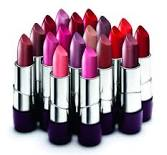
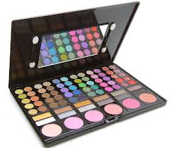
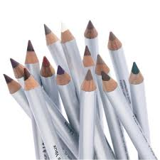

Co obowiązkowo powinno znaleźć się w Twojej kosmetyczce ???
Pomadka i błyszczyk
Niezbędna w każdym przypadku. W zależności od okazji stosujemy różne szminki i błyszczyki. Najczęściej jednak wybieramy jasne odcienie, ponieważ w makijażu jest jedna zasada. Jak już podkreślone są mocno oczy, to usta tylko lekko muskamy błyszczykiem. Gdy chcemy, żeby to usta grały pierwsze skrzypce, wtedy możemy szaleć z kolorami stosując te nawet najciemniejsze, pamiętając jednak o tym, by oczy były tylko lekko podkreślone. I jeszcze jedna ważna rzecz, choć często pomijana – konturówka do ust. To ona podkreśli nam usta wyznaczając granice ich malowania, więc nie zapominajmy o niej.-
Baza pod makijaż
Po nałożeniu bazy, twarz pokryta jest cieniutką warstwą silikonu, który ma działanie wygładzające. Dzięki temu, podkład się lepiej rozprowadza i jest bardziej trwały. Sprawia też, że pory są mniej widoczne. Na rynku dostępne sa bazy bezbarwne, rozświetlające i matowe - idealne dla tłustej cery. Podkład
Mamy do wyboru wiele różnych podkładów: w płynie, w sztyfcie, w kremie czy kompakcie. W zależności od tego, kto co lubi. Podkład nakładamy palcami lub specjalnymi przeznaczonymi do tego gąbeczkami. Popularny stał się również specjalny pędzel, dzięki któremu zużywamy mniej podkładu i uzyskujemy naturalny wygląd unikając tym samym, tzw. "efektu maski”.Puder
Puder jest bardzo ważny przy makijażu, ponieważ utrwala położony podkład. Nakładamy go za pomocą dużego pędzla lub puszka. Do wyboru mamy pudry: sypkie, w kamieniu lub w kulkach. W ciągu dnia, gdy twarz zaczyna nam się świecić, najwygodniejszy jest puder w kamieniu. Róż
Dzięki różom, możemy korygować twarz, nadawać jej kształt, optycznie wyszczuplać, wydłużać. Położony w odpowiednim miejscu pięknie komponuje się z całym makijażem.Cienie do powiek
Dobrze jest mieć w torebce zestaw przynajmniej trzech cieni. Nasze oko nie jest płaskie i stosowanie tylko jednego cienia na powiece, nie da dobrego efektu. Oko podkreślamy stosując odpowiednio cienie, najciemniejsze kładziemy w zewnętrznym kąciku oka, na środek powieki trochę jaśniejszy, a najjaśniejszy w wewnętrznym kąciku oka oraz na łuku brwiowym. Kredki do oczu
Można je dostać w najróżniejszych kolorach. Najpopularniejsze są czarne i brązowe. Dzięki nim ładnie skorygujesz oko, podkreślając jego urodę. Do wieczorowego makijażu, można pomalować również środkową część dolnej powieki, co bardziej podkreśli oko.Tusz do rzęs
Bez tuszu ani rusz! Jest on dopełnieniem całego makijażu. To on sprawia, że nasze spojrzenie nabiera wyrazu. Na rynku jest mnóstwo tuszy do rzęs, każda z nas może znaleźć coś dla siebie.